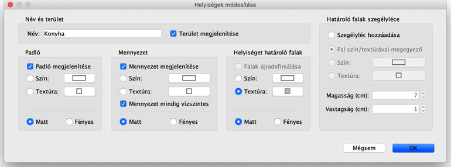

|
Ha az eg�rmutat�t az indik�torok valamelyike f�l� h�zza, az megv�ltozik, ek�pp jelzi,
hogy az adott pontot vagy feliratot h�z�ssal mozgathatja. Am�g az eg�rgombot
nyomvatartja, seg�dvonalak �s a falak m�gnesess�ge seg�ti a sarok vagy m�s hely
megtal�l�s�ban.
Az eg�rrel v�ltoztatott szob�k egyszerre v�ltoznak az alaprajzon �s a 3D n�zetbem.
A helyis�g neve �s 3D tulajdons�gai a hozz�tartoz� be�ll�t�slapon szerkeszthet�k, mely
megjelenik, ha a helyisl�gre dupl�n kattint, vagy a helyis�g kijel�l�se ut�n
kiv�lasztja az Alaprajz > Helyis�g m�dos�t�sa... men�t.

A helyis�g panelen megv�ltoztathatja a helyis�g nev�t, vlaamint hogy a ter�lete
kijelz�sre ker�lj�n-e.
Szint�n megjel�lheti, hogy a helyis�g padl�ja �s mennyezete megjelenjen-e a 3D
n�zetben, tov�bb� azok sz�n�t vagy text�r�j�t �s f�nyess�g�t.
Ha a kijel�lt helyis�g �rint, vagy nagyon k�zel van egy vagy t�bb falhoz, a
Helyis�g m�dos�t�sa p�rbesz�dablak tartalmaz egy
Helyis�get hat�rol� falak opci�t is, ahol be�ll�thatja a helyis�get hat�rol�
falak helyis�g fel�li oldal�nak sz�n�t vagy text�r�j�t. Ha sz�ks�ges, ebben a r�szben
tal�l egy Falak �jradefini�l�sa opci�t is, mely automatikusan elv�gja a
megfelel� helyen a t�bb helyis�get is hat�rol� falakat.
 |
|
 |
| Eredeti falak |
|
�jradefini�lt falak |
|